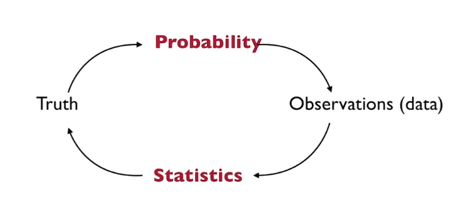

Goals
\(1.)\) To give an introduction to the mathematical theory behind statistical models.\(2.)\) Understand the limitations of the statistical models.
\(3.)\) Talk about theoretical guarantees (Which method is better than the other)
After this chapter, we will be able to formulate a real-life situation in mathematics by selecting an appropriate statistical model.
Why do we want to do statistics?
Now let's see where do statistics shows in real-life.For example, see this New York Times article, here it is claimed that,
"These $250 running shoes will make you run faster"They claim to have 500,000 running time for different shoes.
And what we are trying to understand here is that, Is 500,000 running time is sufficient number? what if there are 5Million or say 50Million!
Data comes from a random process They aren't just a sequence of numbers
And those numbers are representative of that random process. The goal of statistics is to extrapolate from a finite number of data to what we can get if we had an \(\infty\) amount of observation. If we have an \(\infty\) amount of data we can describe a random process (but there still be some randomness), and this process helps us to make a prediction.
To understand randomness, we need Probability(it's also prerequisite for Statistics).
Probability
Here we have a description of a random process and we are asked about the outcome from that random process, like expectation, probability distribution, etc.Now the question is where does Statistics fit in all of this?.
We don't need statistics to understand that, A fair die has a \(\frac{1}{6}\) chance to outcome a 1 OR A fair coin has a \(\frac{1}{2}\) chance to outcome a heads.
But what if we don't know about that random process, then we need statistics to figure it out.What if the coin isn't fair?, then we start flipping a coin, collecting the number of heads and tails, and then we would try to see that probability is converging to maybe 1/2.
Sometimes there is real randomness like a biased coin, measurement error, etc.
Sometimes there is no randomness, this is where most of the randomness comes from. There is no randomness in there (people don't think of themselves acting randomly), there is a huge component that we don't understand, when we talk about genes we are trying to predict personalized medicines based on gene profiles, gene profile tells a lot about some disease, they don't tell us everything. So there are things that we don't understand, it's just not accessible to us.
Statistical Modeling
Think of a Complicated process what we do is we split this Complicated process into two parts, first is Simple process this is what we do understand about the process, and another one is random noise this is the thing that we don't understand.Complicated Process \(\equiv\) Simple Process + Random NoiseGood Modeling consists in choosing (plausible) simple process and noise distribution.

This is the Central Dogma of probability and statistics, So what it's saying is:
We have a truth(Random Process) that generates data, and probability will tell us what our data look like.For example: Say that we have our fair coin as truth, we don't know how it generates the sequence of heads and tails, all we see is a (random) sequence of heads and tails.
And if we don't know anything about the coin (like is it fair or not) it's the purpose of statistics, here we try to recover truth from data
The Kiss Example
Source: https://www.nature.com/articles/421711aSo the question here is, "do people have a preference of turning their head to the right when kissing?"
According to the author, the study concludes:
A neonatal right-side preference makes a surprising romantic reappearance later in life.Data is very simple, a person goes out and records whether people turn their head, to the left or right.
Now we want to do some modeling, So how can we tackle this problem?
Now if a person collected data and (say) 90% of them turn their head to the right. then it's an indication that peoples do have a preference of turning their head to the right.
But how to decide the cutoff (beyond which we can say Yes people do have a preference of turning their head to the right)?
What if the data states that 51% of them turn their head to the right. then Can we say that it is an indication that peoples do have a preference of turning their head to the right?
What we want, is to understand the true proportion of people turning there head to the right, in the entire population of the world.
Statistical experiment
\(p\): Proportion of couples who turns their head to the right while kissing.\(n\): Total number of observation (say 1 for RIGHT and 0 for LEFT)
\(\hat{p}\): estimator of \(p\).
According to study \(n=124\) and \(80\) peoples turns their head to the right.
\[\hat{p}=\frac{80}{124}=64.5\%\]
64.5% seems to be \(\gt\) 50% but is it significantly larger then 50%?
Say that we have only 3 data points.
- Will you convince if we have 3 Right (\(\hat{p}=100\%\))?
- Will you convince if we have 2 Right(\(\hat{p}=66.66\%\))?
This question is important, What your sample size should be?
Another way to present this problem is, for \(n=124\) What is the minimum number of couples that move their head to the right would we need to convince ourselves that p\(\gt\)50%? or p\(\gt\)63% or p\(\gt\)72 or ...
Estimator
\[R_i=\left\{\begin{matrix}
1& \text{if }i^{th}\text{ turns to right}\\
0& \text{if }i^{th}\text{ did not turns to right}
\end{matrix}\right. ;\quad i=1,...,n \\
\
\\
\hat{p}=\overline{R}_n=\frac{1}{n}\sum^n_{i=1}R_i\]
\(\sum^n_{i=1}R_i\) is the number of \(1's\) so if I have \(80\ 1's\) in the sequence then \(\sum^n_{i=1}R_i=80\)
\(\hat{p}\) is Sample average \(\overline{R}_n\)
Ok we got an estimator but what is it's Accuracy, how good is it,what does the accuracy even mean? Accuracy of our estimator \(\hat{p}\) depends on true \(p\) which we don't even know. We want to know how close is \(\hat{p}\) to true \(p\) this is where randomness comes into play. We think of \(R_i\) as random variables so that \(\hat{p}\) is also a random variable. Now this random variable (\(\hat{p}\)) will tend to take some values \(\in [0,1]\).
Modeling assumptions
Coming up with a model consists of making assumptions on what those \(R_i\)'s are, So here are the assumptions that we made:\(1.\quad\) Each \(R_i\) is a random variable.
\(2.\quad\) Each \(R_i\) is a Bernoulli(we will see it later) with parameter \(p\)
\(3.\quad\) \(R_1,R_2,...,R_n\) are mutually independent
Remember that dogma we showed above.
If you knew the truth(Random Process) you can generate how the observation looks like.And we want to go from observation to the truth(Random Process).
Now let's focus on the probability to statistics part.
So first we will generate a population of 5000 kissing couples artificially using our computers (or say python).
Now we choose a true proportion \(p\), and if we took two different values of \(p\) like:\(p=0.35%\), \(p=0.65%\). We generate data separately for those \(p\)'s
And then we generate 1000 samples of 124 couples, So here we are doing the experiment 1000 times, so we have 1000 samples then we create a histogram from those samples.
import numpy as np
import matplotlib.pyplot as plt
# population: Total number of kissing couples
# p: proportion of peoples that turn there head to right while kissing
# get_sample_with_true_p() will return iid random variables
# total number of r.v. = population
def get_sample_with_true_p(population,p):
a=[0]*population
_1_s = int(population*p)
for i in range(0,_1_s):
a[i]=1
np.random.shuffle(a)
return a
population = 5000
n = 124 # n: Total Number of couples we samples
# true_p: this the true p
# p: proportion of people turning their head to right while kissing
true_p = 0.35
population_sample = get_sample_with_true_p(population,true_p)
# Now we will take samples of n=124 peoples from those 5000 population
# And run the simulation 1000 times
estimators = []
for i in range(0,1000):
# Here we randomly select 124 couples out of 5000
sample = np.random.choice(population_sample,n)
estimators.append(sum(sample)/n)
plt.hist(estimators, histtype='bar', rwidth=0.95)